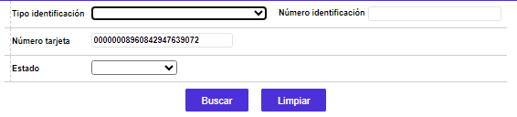

Consulta tarjetas reestructuradas
Mediante esta opción se consultan las tarjetas o créditos a los cuales en algún momento se les ingresó una reestructuración o refinanciación, bien sea que ésta se haya aplicado exitosamente o no, tanto en línea como en batch.
El formulario contiene la opción Detalle. Adicionalmente, cuenta con un filtro de búsqueda.
Filtro: Se pueden realizar consultas a través de las siguientes opciones:

| Tipo de identificación | En este campo tipo combo, el usuario puede seleccionar el tipo de documento asociado al cliente al cual corresponde la tarjeta que se desea consultar en la base de datos. |
| Número de identificación | Campo numérico de 16 posiciones, en el que se ingresa el número de identificación del cliente asociado con la tarjeta que se quiere consultar. |
| Número tarjeta | Campo alfanumérico de 23 posiciones, en el cual se ingresa el número de tarjeta que se desea consultar. |
| Estado | En este campo tipo combo, el usuario puede seleccionar entre Solicitada, Denegada, Candidata, Negada no pago, o Reestructurada, según las tarjetas que desea consultar en la base de datos. |
Detalle: Si el usuario invoca la opción Detalle se despliega el siguiente formulario, el cual contiene la información detallada del estado de la refinanciación o reestructuración consultada: